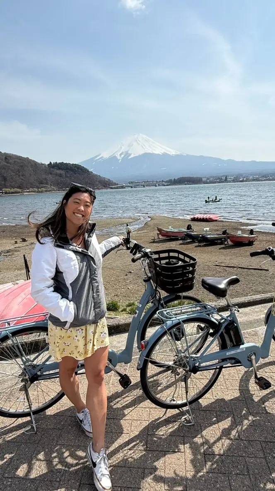

About Vania
Hi, I’m Vania—your travel advisor and fellow out-of-office enthusiast
I’m a family nurse practitioner, a mom, a Hyrox athlete and a Fora Travel advisor. I know what it’s like to have more ambition than free time. That’s why I plan trips with ease built in.
About me
- I love Michelin-star street food and fine dining.
- My favorite souvenir is a new outfit.
- I like to go where the locals go.
- I like finding nature, even in a city.
- Adventure!? Go-karts, rock climbing, jumping off boats, zip-lining—I love it all.
- I always plan to do absolutely nothing, because that’s how you come home with a spontaneous story. It’s the Anthony Bourdain in me.
Why I started Sorry on PTO
I’ve explored 22+ countries firsthand, and friends kept asking me to plan their trips. As a Fora advisor, I can now add something extra: access to luxury hotel partner programs like Virtuoso and Marriott STARS, with perks such as resort credits, room upgrades and early or late check-in when available. I specialize in custom, multi-city Japan trips, and I plan honeymoons, Europe getaways and group trips too. No cookie-cutter itineraries.
My clients say I ask a lot of questions. Guilty. It’s how I get to know what makes a trip feel like yours—and I’m happy to call the hotel when something needs to be handled.
I’m based in Whittier, California, and plan trips for travelers across Southern California and the US.

Kind words
“Hands down the best travel planner I’ve ever used! She truly took care of everything so we didn’t have to stress or worry about a thing and could just enjoy our vacation. I was actually able to relax, be present, and enjoy the experience instead of constantly worrying about what we were doing next.”
“She takes the time to ask thoughtful, probing questions so she can really understand what you’re looking for and create the right trip for you, rather than just giving generic recommendations. She never hesitates to contact the hotel or reach out on your behalf when something needs to be handled.”
“I’ve taken a trip with her to Barbados and to this day, it’s my favorite and most memorable trip I’ve taken! It was well balanced with rest and relaxation on beautiful beaches and adventurous expeditions. You can also count on her to find great spots to eat, which to me is the best part of traveling!”
Ready when you are
Let’s block your calendar for your next OOO
Tell me where you’re dreaming of, how you like to travel, and when you can finally log off. I’ll take it from there.